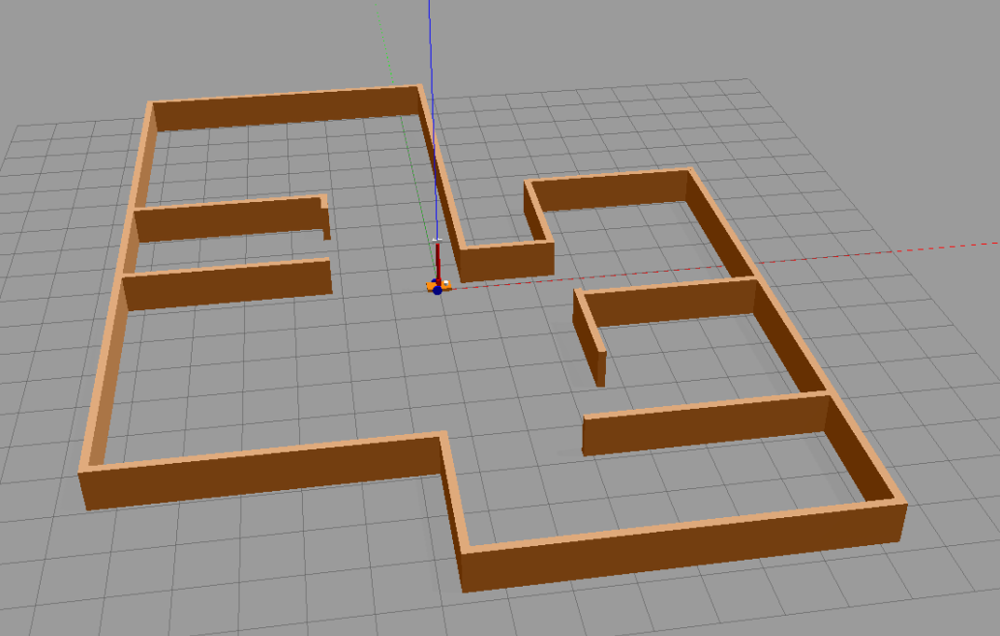
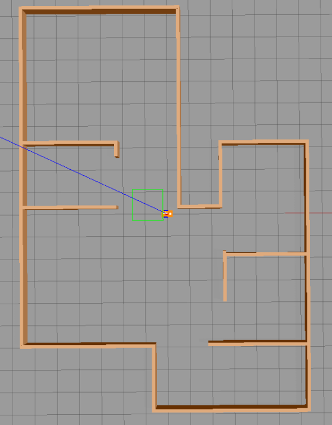
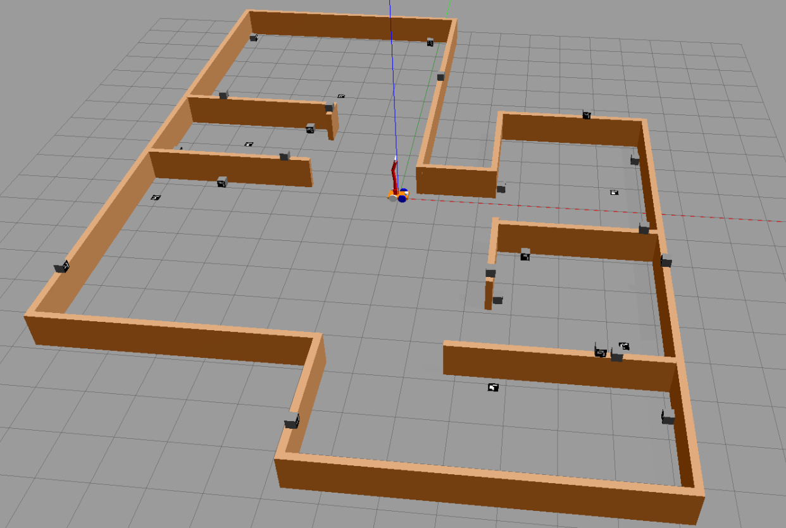

WORLDS – a collection of Gazebo World Files
note that:
the grid represents squares 1m by 1m
red : x, green : y, blue : z
HOW TO install the package
nothing more to do: just pyut the package in your workspace.
for running the world ‘assignment3.world’ you need also to copy the content of the folder “model” inside /root/.gazebo/models .
file square_room.world
roslaunch robocluedo_robot_hunter gazebo.launch world_name:=square_room.world
a 6x6 square room. the center of the room is the origin of the world frame.

the environment is quite simple: just one root. the robot is spawned in the origin of the world frame.
file indoor.world
roslaunch robocluedo_robot_hunter gazebo.launch world_name:=indoor.world
an empty indoor environment. here’s how it appears:

here’s the environment seen from the above:

file assignment3.world
Note
For running this world frame, you have to copy the content of the folder models inside the package into the path /root/.gazebo/models.
roslaunch robocluedo_robot_hunter gazebo.launch world_name:=assignment3.world
This world has the same structure of indoor.world but including the ArUco markers.
